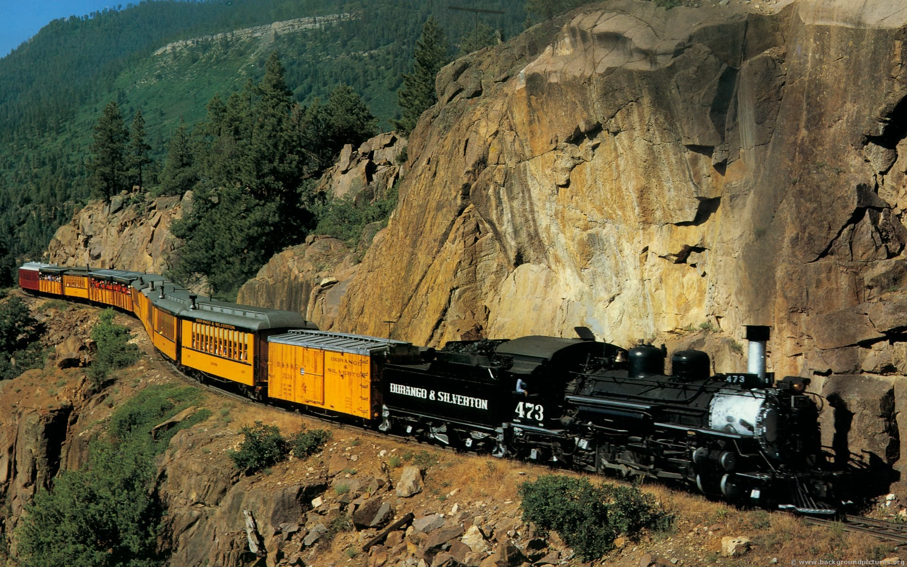

Week 9 - Commercial Aspects of Engineering
In a capitalist society the commercial aspects of engineering are unavoidable. As result the financial realities of a project need to be constantly considered. For example, it may be better to choose an option that in the long run is detrimental to the project from an engineering standpoint but makes sense financially. In the course managing software development, one concept that was discussed was how an agile methodology and using an MVP can be economically beneficial. Take the simple example of building an e-commerce website. It may require less work in total to design and build the entire system up front rather than identify and first prioritise a minimum viable product. However, in the case that a MVP is first worked on, money can start being made much sooner. Despite the possibility of refactoring and redesigning parts of the website, getting a basic version of the website up and running could make more money in the long run.
For the course COMP3500 the project I am involved in is a start-up. Naturally this requires some time and energy to be devoted into thinking about the commercial viability of the project. During my experience with the project, I found myself preferring to think about technical parts of the project rather than the commercial ones. My preference to ignore the commercial aspects of projects is something I will keep in mind going forward.
WEEK 10